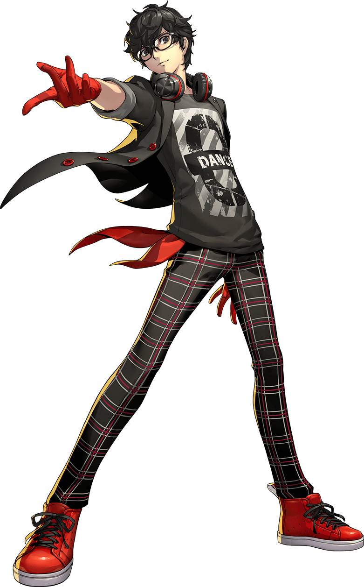

Personal Life
Throughout the game we also get to see Ren’s Personal life but not very much of it. During the play time of the game there are some places u can go to though such as the batting cage witch can help you raise your proficiency and you can unlock prizes as well for going to the batting cage there is also a bathhouse close by that will raise guts if you spend to long in the bathhouse there is also a burger joint that has a challenge and will also increase your guts if u decide to do the challenge. Aside from the those place Ren is able to go almost anywhere if you have unlocked the area that is but do the game being a kind of go where you want to go there real isn’t much of a personal life that we get to see because you control his personal life
In Persona 5 the Animation, Ren Amamiya comes off as very quiet and polite. After the court's decision, he becomes visibly depressed and, initially, becomes hesitant to help Ryuji in their first encounter with Kamoshida. After awakening to his Persona, however, Ren is more willing to help someone. When he bumped into Shiho, he didn't hesitate to pick up her papers and return them to her. He always seems to look out for his companions. When spying on the new track coach, Ryuji asked why he was doing this and Ren responds that seeing him mope around bothers him. Ryuji also notes that, while in the Metaverse, Ren is different, being very aggressive.